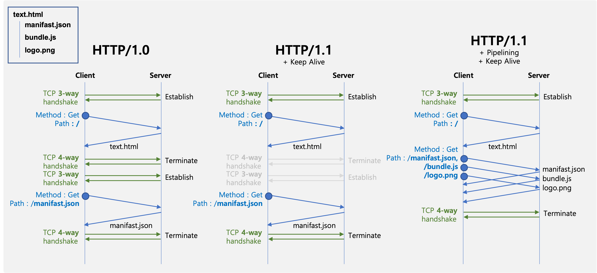
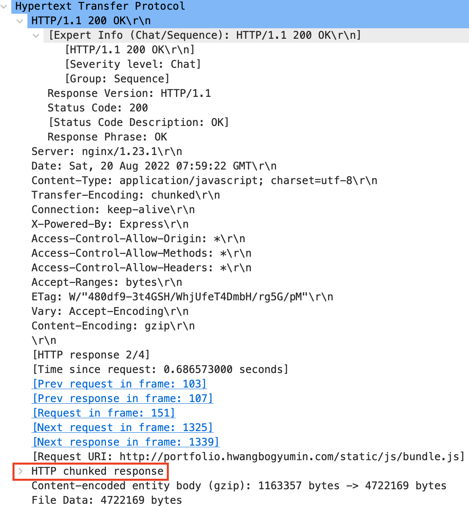
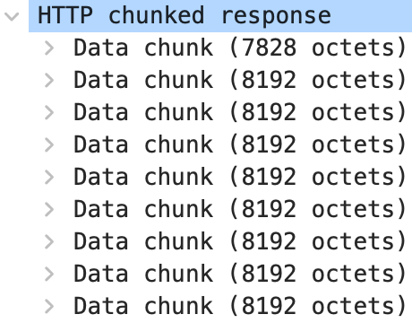
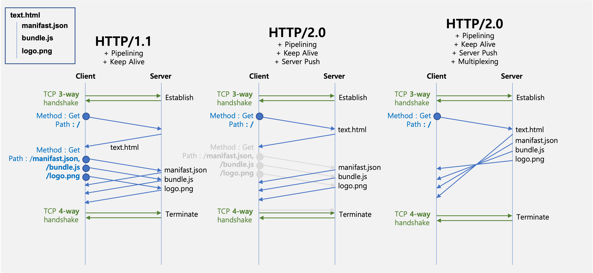
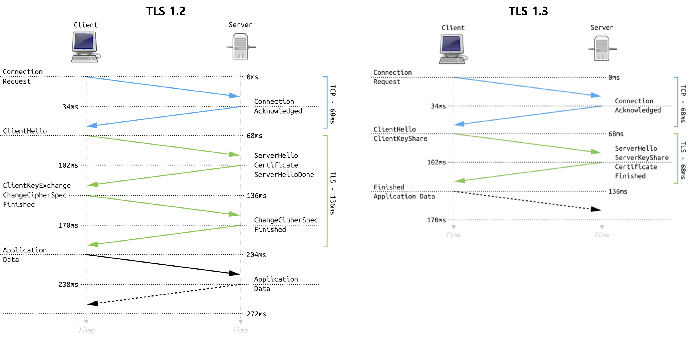
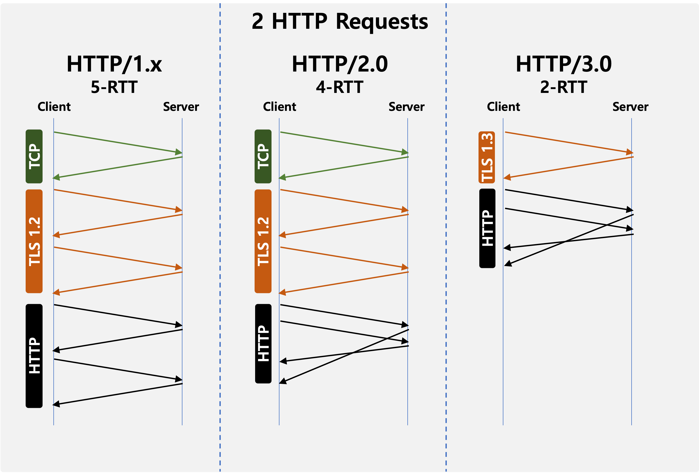

Application Layer
- Various protocols exist in the application layer. Among them, HTTP is a widely used protocol, and today I will describe it in detail.
HTTP
- HTTP(Hyper Text Transfer Protocol) is a protocol to send and receive data between the browser and the server, so it has become an essential knowledge for developers.
Looks like this
HTTP is a stateless protocol.
What is the stateless meaning of? Here is an example that shows the difference between Stateful and Stateless.
Stateful
Alice : Hey Bob, can i buy a coffee?
Bob : which one?
Alice : latte plz.
Bob : cost will be 2$
Alice : here is 2$.
Bob : here is latte!Stateful
Alice : Hey Bob, can i buy a coffee?
Bob : which one?
Alice : latte plz.
Bob : cost will be 2$
Alice : 2$ for what?
Bob : for latte.
Alice : how much for latte?
Bob : cost will be 2$.
Alice : 2$ for what?
Bob : …In this example, Alice is a server and Bob is a client. Alice don’t remember the state that Bob said. So Bob should remember the cost of latte(this job will be charged at client’s Cookie) and say “I want latte and here is 2 dollars”. Stateless will help server to reduce the load and to improve scalability.
But not everything can be designed stateless. Even if you simply look at the LOGIN, the server must maintain the logged-in state of the user. In this case, the state is maintained using browser cookies or server sessions.
Many Web service use HTTP to produce services. This HTTP has been changed a lot since 1990, from HTTP 1.0 to HTTP 3.0. I will describe HTTP in detail.(HTTP 1.0~2.0 based on TCP, HTTP 3.0 based on UDP)
HTTP 1.0 vs 1.1

HTTP 1.0 can only handle with one Request/Response. This occurs problems.
- Increaed RTT(Round Trip Time) : client should establish/terminate TCP connection for very reqeust. So, there is a unnecessary additional process here.
- Increaed header size : because of metadata, cookie things.
To handle these problems, HTTP 1.1 use base64 encoding, image spliting, keep-alive.
- Base64 encoding : compress header.
- Image spliting : load merged image and split it, so reduce RTT for loading multiple images.
- Keep alive : Reduce unnecessary additional TCP Establish/Terminate process.
- Pipeline : HTTP 1.0 cannot send multiple reqeust, because they have to wait until the first response come. Pipelining can make client to send multiple request.
However HTTP 1.1 still have problem of HOLB.
- HOLB(Head Of Line Blocking): Every Request & Response should be sequential. Although client get second request faster than first request, client have to wait until first response arrive.
There are a lot of chunks that splited. And In HTTP 1.1, client have to wait until every chunk arrive to get next response.  
HTTP 1.x vs 2.0

To handling HOLB problems, HTTP 2.0 use Serverpush, Multiplexing.(Additionally Header Compression, Stream Prioritization)
- ServerPush : Server can client with additional data without client’s request.
- Multiplexing : Multistream + Resource-Priority. So client dont need to wait until full responsed(chunks1 + chunks2 + chunks3 + …). Of course if there is a priority between data, client have to wait!
HTTP 2.0 vs 3.0
To know about HTTP 3.0, we should know about TLS(Transport Layer Security)! TLS is a security layer between Application and Transport Layer(TCP/IP 4 Layers). When we communicate with HTTP, we can capture HTTP packet and look inside. Which means that we can actually snatch HTTP packet and see the private informations inside the packet. This is critical when you send password. TLS can encrpyt all Application data and prevent from capturing private information by others. I already describe in detail in my github wiki What is SSL/TLS?
I will shortly describe TLS 1.3
TLS 1.3v Handshake RFC#8446
1
2
3
4
5
6
7
8
9
10
11
12
13
14
15
16
17
18
19
20
21
22
23
24
25
26
27
28
29
30
31
32
33
Client Server
Key ^ ClientHello
Exch | + key_share* send A,g,p: A = g^a (mod p)
| + signature_algorithms*
| + psk_key_exchange_modes*
v + pre_shared_key* -------->
ServerHello ^ Key
+ key_share* | Exch send B: B = g^b (mod p), driven Pre-Shard-Key(PSK) = A^b (mod p)
+ pre_shared_key* v
{EncryptedExtensions} ^ Server send Encrypted message m'=GCM(Key=K,IV=Client's random + Server's random, M=Extensions from Client)
{CertificateRequest*} v Params
{Certificate*} ^ Server's pub_key, sign, CAs' pub_key, signs
{CertificateVerify*} | Auth sign(RSA priv_key, handshake context+certificate)
{Finished} v send HMAC(all handshake)
<-------- [Application Data*]
driven Pre-Shard-Key(PSK) = B^a (mod p)
^ {Certificate*}
Auth | {CertificateVerify*}
v {Finished} send HMAC(all handshake)
-------->
[Application Data] <-------> [Application Data]
+ Indicates noteworthy extensions sent in the
previously noted message.
* Indicates optional or situation-dependent
messages/extensions that are not always sent.
{} Indicates messages protected using key PSK :
[] Indicates messages protected using key Kn : HKDF
derived from [[sender](https://datatracker.ietf.org/doc/html/rfc8446#ref-sender)]_application_traffic_secret_N.
Since HTTP 3.0 use TLS 1.3, here is comparation between TLS 1.2 and TLS 1.3.

| Skills | TLS 1.3 | TLS 1.2 |
|---|---|---|
| Key exchange | (EC)DHE that can serve forward secrecy | RSA, DH, DHE |
| Handshake | 1-RTT, 0-RTT(forward secrecy X) | 2-RTT |
| Encrpytion | AES-256-GCM-SHA384 | DHE-RSA-WITH-AES-256-CBC-SHA256 |
| Sign-part | Every handshake is signed(Finished) | small part of handshake |
Final comparison, HTTP 1.x vs 2.0 vs 3.0
- Lastly here is a camparation of HTTP 1.x, 2.0, 3.0.
| HTTP 1.x | HTTP 2.0 | HTTP 3.0 |
|---|---|---|
| [HTTP 1.x] [TLS(optional)] [TCP] | [HTTP 2.0] [TLS 1.2+] [TCP] | [HTTP 3.0] [Quic [TLS1.3] ] [UDP] |
| * Keep-alive * image spliting | * Multiplexing * ServerPush | * Reduce RTT for establishing TCP connection by using UDP |
| Problems : Head Of Line Blocking | Problems : Still high RTT |
What is RTT of sending 2 HTTP requests in different HTTP versions? 
If there are any mistakes, please email me.